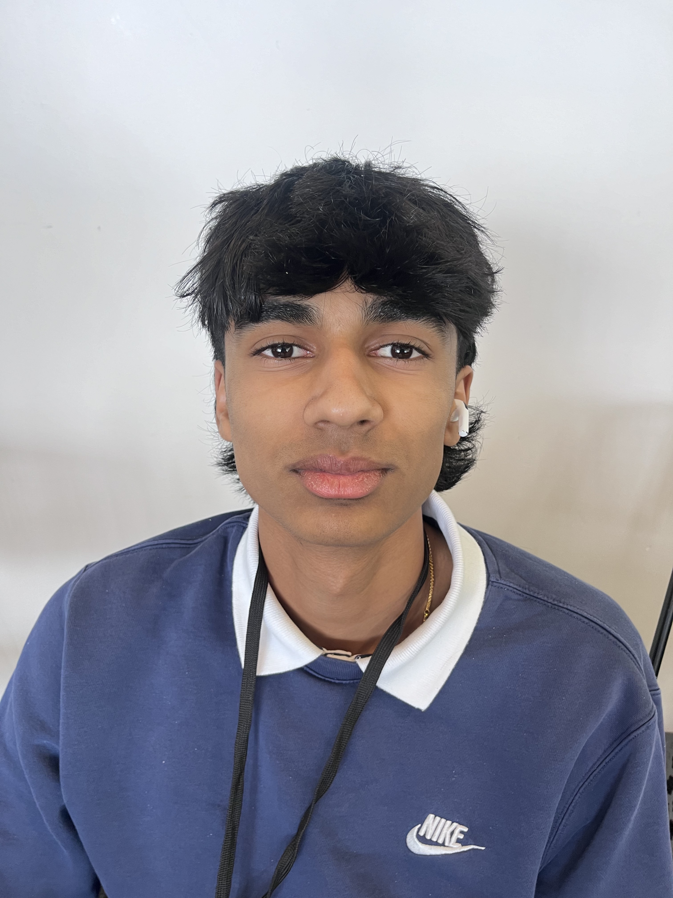

Meet the team!

Arjun is a figure of unwavering determination and dedication, with a passion that lights up his path towards a future in computer science. From a young age, he was fascinated by the endless possibilities technology could offer, spending countless hours learning to code, debug, and innovate. His drive is not just about achieving personal success but also about making a tangible difference in the world through technology. Arjun's commitment to his goals is evident in his meticulous approach to problem-solving and his relentless pursuit of knowledge. Whether it's through developing software that can improve lives or participating in hackathons to push his limits, Arjun's journey in computer science is marked by a clear vision and an unshakeable commitment. As he stands on the brink of his professional career, it's clear that Arjun's dedication and drive will propel him to remarkable heights in the field of computer science.

Lakshya Jain is an avid writer, researcher, and educator with over 100 articles on Medium covering AI, technology, politics, and business. An advocate for ethical AI education, Lakshya wrote for The Boston Globe, presented at Harvard, and lobbied at the Massachusetts State House. He researched at MIT Lincoln Laboratory on mobile network topologies and at the Antarctic Meteorological Research Center on Antarctic weather data. As a committed educator, Lakshya leads Karate Classes, facilitates professional development workshops, and has presented at an international education conference. In school, Lakshya coaches the Math Team, leads Model UN, and helps teach Calculus and Physics. Lakshya plans to study engineering and become an entrepreneur.

Glodi stands out as a beacon of determination and dedication, with his sights firmly set on a future within the realm of cyber security. From an early age, he was captivated by the complex world of internet safety and data protection, leading him to dive deep into the intricacies of coding and network security. His drive is not merely a pursuit of personal achievement but a mission to safeguard the digital frontiers. Glodi's dedication to his studies and hands-on experience in cyber security internships have honed his skills, making him a formidable force against cyber threats. His approach to challenges is methodical and persistent, embodying the essence of a true cybersecurity warrior. As Glodi prepares to step into the professional world, it's evident that his passion, coupled with his unwavering commitment, will make significant contributions to the field of cyber security.

Dylan is the epitome of dedication and positivity, whose ambitions in computer engineering are as vast as his spirit. From the outset, he approached his work with a kind of zeal that both inspires and invigorates those around him. His journey is not just one of academic or professional achievement but also of personal growth, where challenges are seen not as obstacles but as stepping stones. Dylan's positive mindset is his most powerful tool, allowing him to navigate the complexities of computer engineering with optimism and resilience. His passion for innovation drives him to explore new technologies, always with the aim of contributing to a better future. As Dylan moves forward in his career, it's clear that his dedication, coupled with his unyieldingly positive outlook, will lead him to excel in the ever-evolving field of computer engineering.